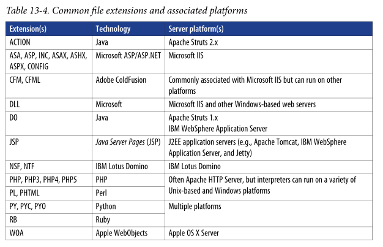

# Crawling
A website crawler will follow all of the clickable links in a website's source code and produce a map of the website for you. Pretty useful.
## Tools
### wget
wget -r -m -nv http://www.example.org/-r recursive
-m turns on recursion, time-stamping, sets infinite recursion depth
-nv no verbose (but not completely quiet)
-q quiet
--no-check-certificate to skip verifying the SSL certificate
root@kali:~# wget -r -m -nv http://www.example.org/
02:27:54 URL:http://www.example.org/ [3558] ->
"www.example.org/index.html" [1]
02:27:54 URL:http://www.example.org/index.jsp?page=falls.shtml [1124] ->
"www.example.org/index.jsp?page=falls.shtml" [1]
02:27:54 URL:http://www.example.org/images/falls.jpg [81279/81279] ->
"www.example.org/images/falls.jpg" [1]
[...]
Use
tree to view the scraped content
tree### skipfish
https://tools.kali.org/web-applications/skipfishSkipfish is a "web app security reconnaissance tool" developed by Google.
It carries out a recursive crawl and dictionary-based probe of the site and produces a sitemap.
mkdir skipfish_results; skipfish -o skipfish_results http://www.target.com### Nmap http-sitemap-generator Script
I advise making a directory to store the results before you run the script.
nmap -p <port> -Pn --script=http-sitemap-generator 10.10.10.45### cewl
cewl crawls a website and generates a wordlist to be used for further directory discovery or password bruteforcing.
The only place I've found it relevant for is OSCP, but it's probably useful in the real world too.
cewl http://10.11.1.39/otrs/installer.pl > cewl.txt## How to use the crawled data
### Identify Server Technologies
Using the scraped info, you can identify technologies on the server
### Grep for useful data
You can manually review or
grep the crawled web page source code to identify useful data
e.g.
root@kali:~# cd www.example.org
root@kali:~# grep –r –i 'type=hidden' *
index.jsp?page=falls.shtml:<INPUT TYPE=HIDDEN NAME=_CONFFILE VALUE="cart.ini">
index.jsp?page=falls.shtml:<INPUT TYPE=HIDDEN NAME=_ACTION VALUE="ADD">
index.jsp?page=falls.shtml:<INPUT TYPE=HIDDEN NAME=_PCODE VALUE="88-001">
Search for <script tags
grep –r –i '<script' *#### Email addresses Search for
@grep –r '@' *#### Hidden form fields Search for TYPE=HIDDEN
grep –r –i 'type=hidden' *#### HTML comments Search for comments
grep –r '<!--' *#### Hyperlinks Search for HREF or ACTION
grep –r –i 'href=|action=' *#### MetadataSearch <meta tags
grep –r –i '<meta' *